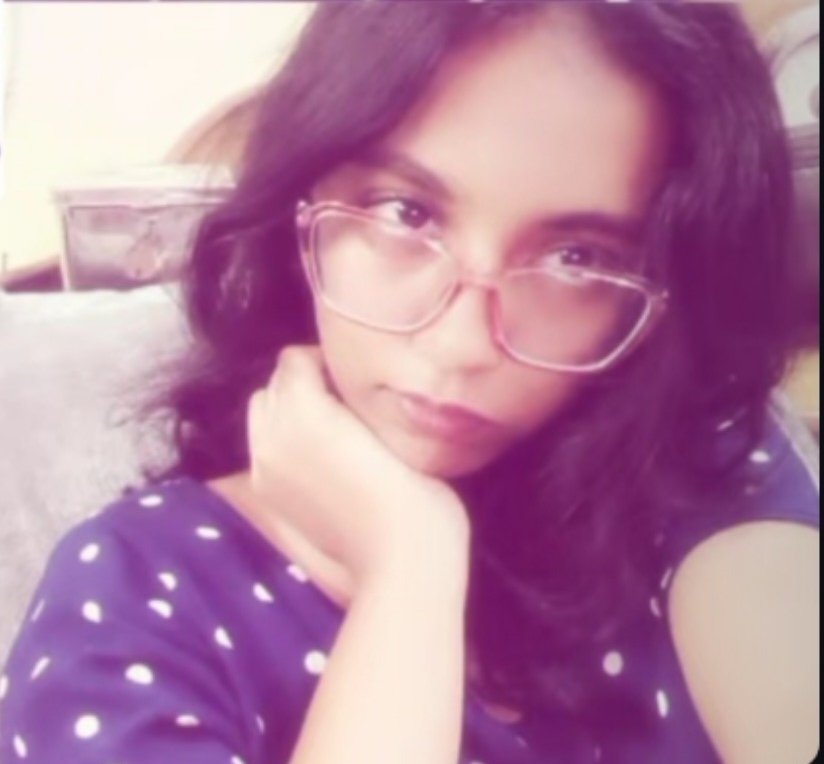

Happy Birthday, Harini 🎉
aka kolagariii👺
Hey, I just felt like writing this because I genuinely enjoy talking to you. Our late-night talks are honestly some of the best parts of my day, especially when everything else feels quiet and calm. I really like how we can talk about anime and just get lost in random characters and storylines like it’s real life.
Playing Roblox with you, especially the horror games, is still my favourite kind of chaos . I like how comfortable our conversations feel, like I don’t have to pretend or act different.
Talking to you feels easy and natural, which is rare. Even the small, quiet moments feel nice when it’s with you. I don’t know how to explain it properly, but I really like the vibe we have.
I’m grateful for all the fun little memories we already have. I hope we keep having more late nights, more anime talks, and more scary Roblox moments. I just wanted you to know I appreciate you a lot and I’m really glad you’re in my life.
And yeah… happy birthday 🤍 I hope your day is full of smiles, fun, and everything you love.